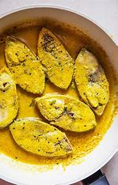

Home
Elish Macher Jhol

Description
This is hilsha-fish-carry one of the best bangla cousine
Ingredients
- 6 pieces Hilsa fish
- 2 tbsp mustard oil
- 2 tbsp mustard seeds(soaked and blended)
- 1/2 tsp turmeric powder
- 3-4 green chilies (slit)
- Salt to taste
- 1 cup warm water
Steps
- Marinate the Hilsa fish with salt and turmeric powder for 10 minutes.
- Heat mustard oil in a pan until it reaches a smoking point, then reduce the heat.
- Add the mustard paste, green chilies, and a little water, stirring well.
- Gently place the marinated fish pieces into the pan.
- Cover and cook on low heat for about 10-12 minutes, turning the fish halfway through.
- Once the mustard sauce thickens, remove from heat.
- Serve hot with steamed rice.
Go TO Top